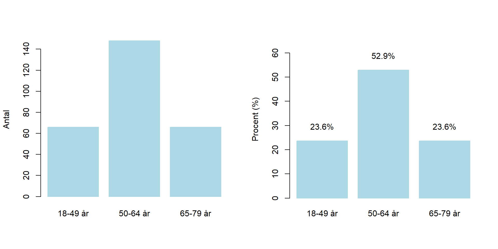

Kapitel 6 Kategorivariabler
Ofta har vi inte bara binära variabler, utan det finns kategoriervariabler av olika slag som har fler kategorier än två. Kategorivariablerna kan vara antingen på nominal eller ordinalskala. Dessutom kan även heltal och diskreta kvantitativa variabler analyseras som som kategorivariabler.
6.1 Deskription av en variabel med fler än två kategorier
Detta avsnitt lämpar sig i regel för variabler med relativt få kategorier, låt säg färre än 10. För analys av variabler med fler kategorier kan alternativa metoder för analys och presentation vara bättre. Notera ordvalet kan eftersom val av presentation och analys måste bedömas från fall till fall.
Detta avsnitt utgår från data som används i kapitlet om binära variabler. Nu introduceras variabeln age som består av ålderskategorierna
- 0 - 65-79 år
- 1 - 50-64 år
- 2 - 18-49 år
Variabel är på ordinal datanivå, även om den anges som numerisk med kategorierna. Dessusom är kodningen lite märkligt kodad, eftersom det lägsta numeriska värdet korresponderar till den högsta datakategorin.
Därför inleder vi med att göra om variabeln till en faktor, med nivåerna i rätt ordning. Därefter ändrar vi namn på kategorierna. Analogt med fallet för binära variabler, skapar vi binära variabler för varje kategori. Det är användbart senare på kursen.
# Variabel. Kodad numerisk.
# 0 - 65-79 år
# 1 - 50-64 år
# 2 - 18-49 år
age <- c(1, 0, 1, 2, 2, 0, 2, 0, 1, 1, 2, 2, 1, 2, 1, 0, 0, 1, 0, 2, 0, 1, 1, 0, 1, 0, 1, 1, 1, 1, 0, 0, 0, 2, 0, 0, 1, 0, 1, 2, 1, 1, 0, 0, 1, 2, 1, 1, 1, 1, 1, 1, 1, 1, 1, 2, 2,
1, 2, 1, 1, 2, 1, 0, 1, 2, 2, 1, 0, 1, 1, 0, 1, 1, 1, 1, 2, 1, 2, 1, 1, 1, 2, 2, 1, 2, 2, 0, 1, 1, 1, 2, 1, 1, 1, 0, 2, 1, 2, 1, 1, 1, 0, 1, 1, 0, 1, 1, 1, 2, 2, 1, 1, 0,
0, 1, 1, 2, 2, 1, 1, 2, 0, 0, 2, 0, 2, 1, 1, 1, 1, 1, 0, 1, 2, 1, 1, 1, 0, 2, 1, 1, 1, 1, 1, 1, 0, 0, 0, 1, 1, 0, 1, 1, 0, 0, 0, 1, 2, 0, 0, 1, 1, 1, 2, 0, 1, 1, 2, 1, 1,
1, 1, 1, 1, 1, 1, 0, 1, 2, 2, 1, 1, 2, 0, 0, 0, 1, 1, 1, 2, 1, 1, 0, 2, 0, 1, 2, 2, 0, 1, 1, 1, 0, 2, 1, 0, 1, 0, 0, 0, 1, 1, 1, 2, 1, 1, 0, 2, 1, 0, 2, 1, 2, 2, 0, 1, 1,
2, 0, 1, 2, 1, 2, 1, 1, 0, 2, 1, 1, 2, 2, 2, 1, 2, 1, 1, 0, 0, 1, 1, 2, 1, 2, 1, 1, 1, 1, 2, 1, 0, 1, 2, 1, 0, 1, 2, 2, 1, 0, 0, 1, 0, 0, 2, 2, 1, 1, 1, 1)
# Gör variabel till faktor och ändra ordningen
age_cat <- factor(age, levels = c(2, 1, 0))
levels(age_cat)[levels(age_cat) == 0] <- "65-79 år"
levels(age_cat)[levels(age_cat) == 1] <- "50-64 år"
levels(age_cat)[levels(age_cat) == 2] <- "18-49 år"
# Skapa binära variabler för respektive ålderskategori
age_1849 <- rep(NA, length(age))
age_1849[age == 0] <- 0
age_1849[age == 1] <- 0
age_1849[age == 2] <- 1
age_5064 <- rep(NA, length(age))
age_5064[age == 0] <- 0
age_5064[age == 1] <- 1
age_5064[age == 2] <- 0
age_6579 <- rep(NA, length(age))
age_6579[age == 0] <- 1
age_6579[age == 1] <- 0
age_6579[age == 2] <- 0
# Vi jämför de tre kodningarna och skapar tabeller på motsvarande sätt som förut.
table(age)
> age
> 0 1 2
> 66 148 66
freq_table_age <- table(age_cat)
freq_table_age
> age_cat
> 18-49 år 50-64 år 65-79 år
> 66 148 66
sum(age_1849)
> [1] 66
sum(age_5064)
> [1] 148
sum(age_6579)
> [1] 66
prop.table(table(age))
> age
> 0 1 2
> 0.2357143 0.5285714 0.2357143
prop_table_age <- prop.table(freq_table_age )
mean(age_1849)
> [1] 0.2357143
mean(age_5064)
> [1] 0.5285714
mean(age_6579)
> [1] 0.23571436.2 Figurer och en kategorivariabel med fler än 2 kategorier
Vi använder ett stapeldiagram för att redovisa antal (frekvenser) eller andelar för en kategorivariabel. Om vi har många kategorier är dotchart ett alternativ.
Vad man bör har i åtanke när man skapar ett stolpdiagram eller stapeldiagram är att huruvida kategorierna avstånd bör vara korrekt representerade i figuren. Bestå kategorierna av nominal eller ordinalskala är avståndet oviktigt. Är däremot variabeln heltal, år, datum så måste avståndet mellan staplarna stämma överens med kategoriernas avstånd.
Dessutom gäller det vara uppmärksam på kategorier som inte har frekvenser.
par(mfrow = c(1,2))
# stapeldiagram baserat på tabellen med frekvenser
barplot(freq_table_age,
ylab = "Antal",
col = "lightblue",
border = "lightblue")
# stapeldiagram baserat på tabellen med andelar
percentages_age <- round(100*prop_table_age, 1)
my_bar2 <- barplot(percentages_age,
ylab = "Procent (%)",
col = "lightblue",
border = "lightblue",
ylim = c(0, 65))
text(x = my_bar2, y = percentages_age + 6, labels = paste(percentages_age, "%", sep="")) 
# Gör en numerisk variabel med två värden till en faktor. Notera att nivåerna i detta fall inte bestäms
# av ordningen i vektorn utan av de numeriska värdens storlek.
df <- read.csv2("data/conscriptiondata.csv")
freq_table_year <- table(df$year)
chisq.test(freq_table_year)
>
> Chi-squared test for given probabilities
>
> data: freq_table_year
> X-squared = 11203, df = 14, p-value < 2.2e-166.3 Inferens och en kategorivariabel med fler än 2 kategorier
Ett goodness of fit-test (GOF) undersöker om det rimligt att det observerad data stämmer överens med en definierad population. Anta att vi i ett OSU har en kategorivariabeln med \(k\) kategorier. Då kan ett sådant test genomföras med teststatistikan \[\chi^2 = \sum_{i=1}^k\dfrac{ (O_i - E_i)^2}{E_i}= \dfrac{ (O_1 - E_1)^2}{E_1}+ \dfrac{ (O_2 - E_2)^2}{E_2}+\ldots+ \dfrac{ (O_k - E_k)^2}{E_k}\] där \(O_i\) är antalet observerade frekvenser i kategori \(i\) och \(E_i\) är antalet förväntade frekvenser, enligt på nollhypotesen, i kategori \(i\). Hypoteserna formuleras i detta fall som \(H_0: p_1 = p_{1,H_0}, p_2 = p_{2,H_0}, \ldots, p_k = p_{k,H_0}\) mot \(H_1:\) Minst en av andelarna inte överstämmer med värdet under nollhypotesen. Teststatistikan är \(\chi^2\)-fördelad med \(k-1\) frihetsgrader givet att nollhypotesen är sann och vi har ett OSU. Dessutom krävs att alla förväntade frekvenser är större än 5.
Vi exemplifierar med vår analys av utbildning och rökning. Vi tänker oss att denna studie äger rum i en befolkning där det i det aktuella ålderspannet finns 65% i ålderskategorin 18-49 år, 20% i ålderskategorin 50-64 år och 15% ålderskategorin 65-79 år. Målet är att jämföra stickprovets åldersfördelning med populationen. För att genomföra detta används \(\chi^2\)-metoder i R med funktionen chisq.test().
Eftersom det finns flera kategorier formuleras hypoteserna som \(H_0: p_1 = 0.95\) och \(p_2 = 0.20\) och \(p_3 = 0.15\) mot \(H_1:\) Minst en av andelarna inte överstämmer med värdet under nollhypotesen.
# Gör en numerisk variabel med två värden till en faktor. Notera att nivåerna i detta fall inte bestäms
# Version 1
resultat <- chisq.test(freq_table_age, p = c(0.65, 0.2, 0.15))
resultat$p.value
> [1] 1.403291e-52
freq_table_age
> age_cat
> 18-49 år 50-64 år 65-79 år
> 66 148 66
resultat$expected
> 18-49 år 50-64 år 65-79 år
> 182 56 42
# Version 2
Oi <- freq_table_age
pH0 <- c(0.65, 0.20, 0.15)
totalsum <- sum(freq_table_age)
Ei <- totalsum*pH0
X2obs <- sum( (Oi - Ei)^2/Ei )
fg <- length(pH0) - 1
p_value <- 1 - pchisq(X2obs, 2)Resultatet ger ett mycket lågt \(p\)-värde (\(p<0.001\)). Tolkningen är att om observerad data är slumpmässigt draget från befolkningen är det mycket låg sannolikhet att observera en så stor skillnad eller större mellan de oberseverade värdena och de förväntade. Data stämmer således inte överens med nollhypotesen. Vad \(p\)-värdet inte besvarar är varför överstämmelsen är låg. Det kan till exempel beror på att urvalet inte kommer är OSU.
6.4 Övningar
Övning 6.1
En studie av Helsing, K. J., & Comstock, G. W. (1977) undersökte faktorer som kan tänkas ha samband med bilbältesanvändning. Du erhåller följande data från studien.
antal_cigaretter <- c(rep(0, 175), rep(0, 149), rep(1, 20), rep(1, 17), rep(2, 42), rep(2, 41), rep(3, 6), rep(3, 9))
bilbalte <- c(rep(0, 175), rep(1, 149), rep(0, 20), rep(1, 17), rep(0, 42), rep(1, 41), rep(0, 6), rep(1, 9))Beskriv sambandet mellan rökning och bilbältesanvändning med en tabell.
Beskriv sambandet mellan rökning och bilbältesanvändning med en figur.
Genom ett statistiskt test för att undersöka sambandet mellan rökning och bilbältesanvändning.
Genomför ett statistisk test utan att använda någon inbyggd test-funktion i R.

Övning 6.2
En studie 1980 undersökte homosexuellas situation Sverige. En del av denna studie utgjordes bland annat en enkätundersökning. Ladda ner Lilla Enkäten som är txt-fil som finns i zip-filen “Enkäterna i csv-format” på https://riksarkivet.se/psidata/livet-som-gay. Utgå från att data är insamlat med OSU och besvara sedan följande frågor:
Har den svarande själv haft en önskan om att inte vara homosexuell? Redovisa med en tabell.
Undersök samband mellan önskan om att inte vara homosexuell och att känna skam eller ångest (SKAM)? Redovisa bortfall. Redovisa en figur.
Undersök samband mellan önskan om att inte vara homosexuell och att känna skam eller ångest (SKAM)? Redovisa bortfall. Redovisa en figur.
Övning 6.3
År 2019 omkom 221 i trafiken. Uppdelat på månad
| Antal omkomna 2019 | Antal omkomna 2018 | Antal omkomna 2018 | |
|---|---|---|---|
| Januari | 27 | 13 | 12 |
| Februari | 17 | 16 | 14 |
| Mars | 10 | 22 | 18 |
| April | 16 | 17 | 17 |
| Maj | 19 | 31 | 24 |
| Juni | 19 | 32 | 27 |
| Juli | 20 | 44 | 31 |
| Augusti | 25 | 29 | 34 |
| September | 15 | 21 | 27 |
| Okober | 23 | 25 | 20 |
| November | 13 | 36 | 10 |
| December | 17 | 38 | 19 |
Källa: Transportstyrelsen
Besvara om antalet omkomna är oberoende av månad.

Övning 6.4
BMI Nutritional status Below 18.5
Underweight
18.5–24.9
Normal weight
25.0–29.9
Pre-obesity
30.0–34.9
Obesity class I
35.0–39.9
Obesity class II
Above 40
Obesity class III
df <- read.csv2("data/conscriptiondata.csv")
df$bmi <- df$weight/(df$height/100)^2
summary(df$bmi)
df$bmi_cat <- NA
df$bmi_cat[df$bmi < 18.5] <- "Undervikt"
df$bmi_cat[(df$bmi >= 18.5) & (df$bmi < 25)] <- "Normalvikt"
df$bmi_cat[(df$bmi >= 25) & (df$bmi < 30) ] <- "Övervikt"
df$bmi_cat[(df$bmi >= 30) & (df$bmi < 35) ] <- "Fetma klass I"
df$bmi_cat[(df$bmi >= 35) & (df$bmi < 40) ] <- "Fetma klass II"
df$bmi_cat[(df$bmi >= 40)] <- "Fetma klass III"
df$bmi_cat <- factor(df$bmi_cat,
levels = c("Undervikt", "Normalvikt", "Övervikt", "Fetma klass I", "Fetma klass II", "Fetma klass III"),
ordered = TRUE)
freq_table_bmi_cat <- table(df$bmi_cat)
prop_table_bmi_cat <- prop.table(freq_table)
barplot(freq_table_bmi_cat)
barplot(prop_table_bmi_cat)
prop_bmi_year <- prop.table( table(df$bmi_cat, df$year), 2 )
barplot(prop_bmi_year, las = 2, horiz = TRUE)
chisq.test(freq_table_bmi_cat)Vi kan konstatera att andelen överviktiga har ökat. Samtidigt har andelen underviktiga minskat.
Det finns ett beroende mellan år och bmi-kategori.
Undersökarna vill beräkna kvoten av andelar lyckade behandlingar (relativ risk), där spjälning är referensgrupp. Eftersom forskarna vill fatta beslut vill man att en hypotesprövning genomförs på 5% signifikansnivå.
Övning 6.5
I riksdagsvalet 2018 blev mandatfördelningen följande. Skapa ett stapeldiagram och ett cirkeldiagram som redovisar mandatfördelningen. Argumentera varför det enda diagrammet är att föredra i detta fall.
| Antal mandat i riksdagsvalet 2018 | |
|---|---|
| Centerpartiet | 31 |
| Kristdemokraterna | 22 |
| Liberalerna | 20 |
| Miljöpartiet | 16 |
| Moderaterna | 70 |
| Socialdemokraterna | 100 |
| Sverigedemokraterna | 62 |
| Vänsterpartiet | 28 |
Övning 6.6
En studie 1980 undersökte homosexuellas situation Sverige. En del av denna studie utgjordes bland annat en enkätundersökning. Ladda ner Lilla Enkäten som är txt-fil som finns i zip-filen “Enkäterna i csv-format” på https://riksarkivet.se/psidata/livet-som-gay. Utgå från att data är insamlat med OSU och besvara sedan följande frågor:
Har den svarande själv talat om för någon heterosexuell bekant (som inte bara är arbetskamrat) att den svarande är homo/bisexuell? Variabeln heter TALAT_OM.
Finns ett samband mellan kön (KOEN) och fråga a)?
Undersök samband mellan att känna skam eller ångest (SKAM) och TALAT_OM? Redovisa bortfall. Redovisa en figur.
Övning 6.7
En marknadsundersökning genom ett slumpmässigt urval av konsumenter för undersöka om färg har betydelse vad gäller val av mobiltelefon. Nedan presenterar data som du fått från företaget gällande vilken färg konsumenterna föredrar av tre möjligt:
| Färg | |
|---|---|
| Cyberblå | 150 |
| Prestigeröd | 150 |
| Supergrå | 200 |
- Har färgen någon betydelse?
Dessutom fanns data uppdelat på kön.
| Färg: Män | Färg: Kvinnor | |
|---|---|---|
| Cyberblå | 100 | 50 |
| Prestigeröd | 60 | 90 |
| Supergrå | 100 | 100 |
- Finns det samband mellan kön och vilken färg konsumenterna föredrar?
Övning 6.8
En studie redovisade antalet döda
6.5 Referenser
Helsing, K. J., & Comstock, G. W. (1977). What kinds of people do not use seat belts?. American Journal of Public Health, 67(11), 1043-1050.
admitted <- c(rep(1, 512), rep(1, 353), rep(1, 120), rep(1, 138), rep(1, 53), rep(1, 22), rep(1, 89), rep(1, 17), rep(1, 202), rep(1, 131), rep(1, 94), rep(1, 24), rep(0, 313), rep(0, 207), rep(0, 205), rep(0, 279), rep(0, 138), rep(0, 351), rep(0, 19), rep(0, 8), rep(0, 391), rep(0, 244), rep(0, 299), rep(0, 317)) male <- c(rep(1, 512), rep(1, 353), rep(1, 120), rep(1, 138), rep(1, 53), rep(1, 22), rep(0, 89), rep(0, 17), rep(0, 202), rep(0, 131), rep(0, 94), rep(0, 24), rep(1, 313), rep(1, 207), rep(1, 205), rep(1, 279), rep(1, 138), rep(1, 351), rep(0, 19), rep(0, 8), rep(0, 391), rep(0, 244), rep(0, 299), rep(0, 317)) department <- c(rep(“A”, 512), rep(“B”, 353), rep(“C”, 120), rep(“D”, 138), rep(“E”, 53), rep(“F”, 22), rep(“A”, 89), rep(“B”, 17), rep(“C”, 202), rep(“D”, 131), rep(“E”, 94), rep(“F”, 24), rep(“A”, 313), rep(“B”, 207), rep(“C”, 205), rep(“D”, 279), rep(“E”, 138), rep(“F”, 351), rep(“A”, 19), rep(“B”, 8), rep(“C”, 391), rep(“D”, 244), rep(“E”, 299), rep(“F”, 317))
table(admitted, male) prop.table(table(admitted, male, department),2) chisq.test(table(admitted, male)) chisq.test(table(admitted[department == “A”], male[department == “A”]))
treatment <- c(rep(“A”, 350), rep(“B”, 350)) success <- c(rep(1, 81), rep(0,6), rep(1, 192), rep(0, 71), rep(1, 234), rep(0, 36), rep(1, 55), rep(0, 25)) size <- c(rep(1, 81), rep(1,6), rep(0, 192), rep(0, 71), rep(1, 234), rep(1, 36), rep(0, 55), rep(0, 25))
prop.table(table(success, treatment), 2) prop.table( table(success[size == 1], treatment[size==1]), 2) prop.table( table(success[size == 0], treatment[size==0]), 2)